The friendly guide to hiring with Nextcloud — from the first application
in your inbox to the signed offer. Written for HR teams and hiring managers; no
technical knowledge needed.
New→Screening→Interview→Offer→Hired 🎉
For Recruiting 0.7 · August 2026 · Everything in this handbook stays on your own server.
What's inside
Recruiting in five minutes The idea, the pipeline, and who sees what
Finding your way around Navigation, the board, and the anatomy of a candidate card
How applications arrive Email intake, the mail tag, replies, and the triage inbox
The candidate file The five tabs: Profile, Votes, Interviews, Offer, Log
Screening & votes Unbiased reviews, assigning screeners, "My reviews"
Interviews Booking against real calendars, the candidate's scheduling page
Offers Draft, four-eyes approval, sending, and tracking the answer
Rejecting & the talent pool Respectful rejections and consent-based keeping-in-touch
Staying on top of things The Stuck lens, aging colors, notifications and the digest
Mail templates Your voice, with placeholders that cannot break
Reports Funnel, time-to-hire and applications per week
Privacy & GDPR What is stored, who can see it, and what is deleted when
01Recruiting in five minutes
Recruiting manages your whole hiring funnel inside Nextcloud.
Applications become cards on a board, your team votes on them without influencing each
other, interviews book themselves against real calendars, and offers need a second pair
of eyes before they go out.
The pipeline
Every candidate moves through the same four active stages — New → Screening →
Interview → Offer — and ends in exactly one of three final states:
Hired, Rejected or Withdrawn. Each stage
has its own color, used everywhere in the app: board columns, table chips and report
charts. Once you know that Screening is amber and Offer is green, you can read any screen
at a glance.
Who sees what
There is no separate user management. You work with the Nextcloud accounts your
colleagues already have, in one of four roles:
Role
Who
What they can do and see
Recruiter
Members of the HR group (your admin configures which group)
Everything: all openings, all candidates, templates, the triage inbox, the
talent pool, reports, GDPR actions
Hiring manager
Picked per opening
Runs the process for their opening: sees all its candidates, moves stages,
assigns screeners, books interviews, creates offers, sends mail
Interviewer / screener
Picked per opening or per candidate
Sees only the candidates assigned to them. Reads the profile and
documents, votes, joins the discussion. Never sees salary or
offer data
Observer
Picked per opening
May watch the pipeline and reports of that opening, but not act
A Nextcloud administrator has no candidate access at
all — being admin only allows configuring the mailbox and retention settings. Candidate
documents never appear in anyone's Files app; they live in protected app storage.
The golden rules
Nothing goes out unreviewed. Every mail to a candidate shows you
a preview first — you can edit every word before it is sent.
Every action is logged. Stage moves, votes, mails, offers — the
candidate's Log tab is the complete history.
Votes are blind. You cannot see your colleagues' votes until you
have cast your own.
Offers need four eyes. You can never approve your own offer.
02Finding your way around
One left sidebar, one board. That's the whole app.
The navigation
New opening — create a job opening (recruiters).
Triage inbox — applications that arrived by mail without
a matching opening. The badge counts what's waiting.
My reviews — candidates you still owe a vote.
My interviews — interviews where you are on the panel.
Mail templates — the texts used for invitations,
rejections, offers and confirmations.
Reports — live numbers over your openings.
Talent pool — candidates who agreed to be considered for
future openings.
Openings — one entry per job, with the number of active
candidates. Closed openings collapse at the bottom.
Handbook — this document, always one click away.
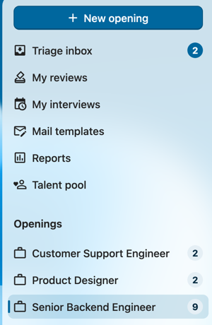
The navigation: your personal to-do lists sit at the top, the openings below.
The board
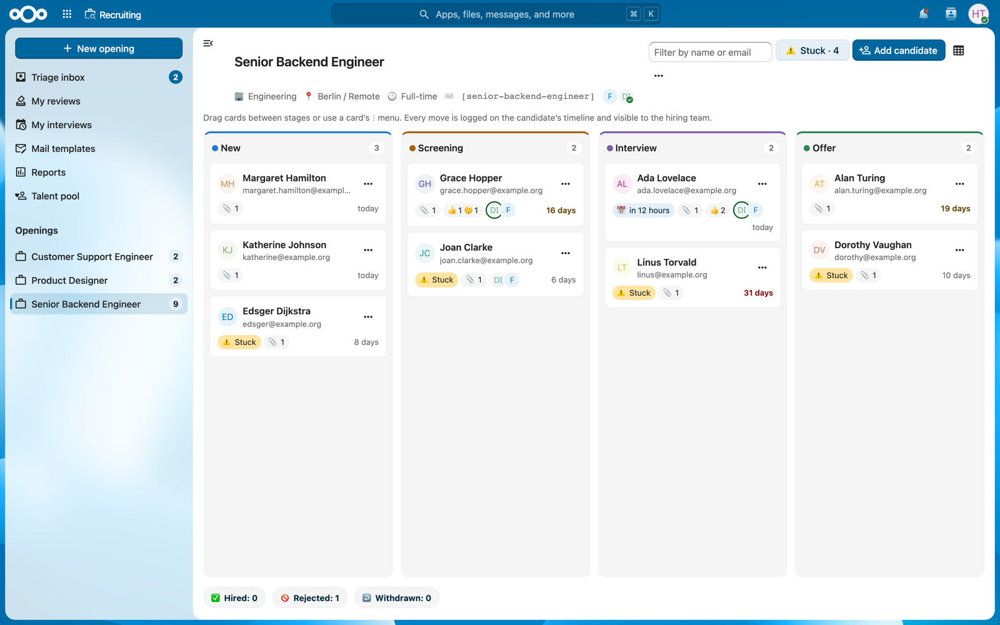
The pipeline board of one opening. Every column is a stage; every card a candidate.
Move a candidate by dragging the card to another column, or use the
card's ⋮ menu if you prefer clicks (it works fully with the keyboard,
too). Every move is logged and visible to the hiring team. The column header
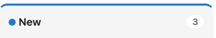
always shows the
true total — if a stage holds more than 100 candidates, the column loads them in
pages with a Show more button.
Anatomy of a card
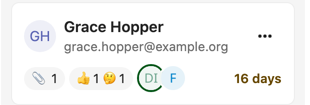
Attachments · votes (👍 1 🤔 1) · the screeners (a green ring
means this person has voted — never what they voted) · time in this stage.
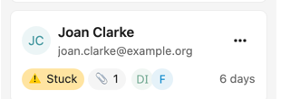
The ⚠️ Stuck chip: something needs your attention here.
Hover it to see why.
The time-in-stage indicator changes color as candidates wait: amber after two
weeks, red after a month. Nobody should
be forgotten in a column.
The toolbar
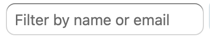
narrows the board to
matching names or email addresses.
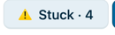
shows only candidates
where something is stuck (more in chapter 9).
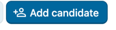
adds a
candidate manually — with drag-and-drop CV upload.
Below the board, three chips summarize the finished candidates —
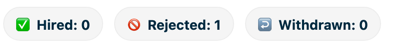
—
click one to jump to the table view where they are listed.
The table view
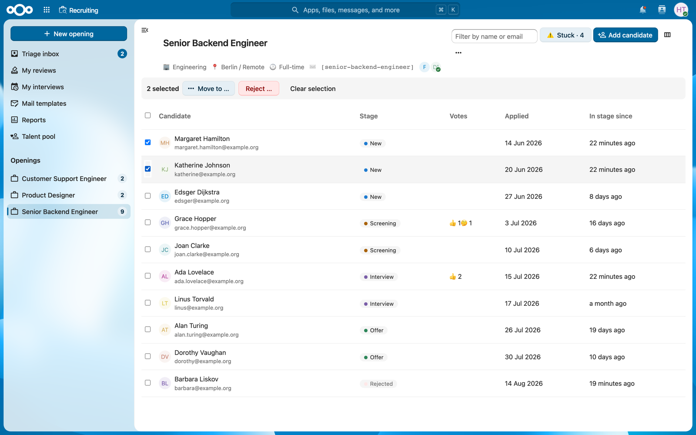
The same candidates as a sortable table — including hired, rejected and withdrawn ones.
Click any column header to sort (a third click restores the original order). Managers
get checkboxes: select several candidates and the bulk bar appears —
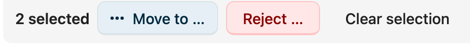
— to move them together or
start a rejection round. Even in bulk, the rejection mail preview appears for each
candidate individually: nothing goes out unreviewed.
03How applications arrive
Most applications should reach the board without anyone lifting a
finger. That's the zero-touch intake.
By email — the normal way
Your admin connects a dedicated application mailbox (for example
jobs@your-company.com). The app checks it every five minutes. Every new mail
becomes a candidate: name and address are read from the sender, the mail text lands on
the candidate's timeline, and attachments become documents.
Every opening has a mail tag, shown in its header:
Mails to jobs+senior-backend-engineer@… land directly on that
opening's board, in the "New" column.
The same works with [senior-backend-engineer] anywhere in the subject.
Everything else goes to the triage inbox.
Put the tagged address into your job postings —
jobs+product-designer@… on the design job ad, and applications sort
themselves. An automatic confirmation of receipt can be sent per opening, so applicants
immediately know their documents arrived.
When candidates reply
Mails the app sends carry a personal reply address for each candidate. When Grace
answers your interview invitation, her reply — attachments included — lands on her
timeline and the hiring managers are notified. Replies never clutter the inbox as
duplicate "applications".
The triage inbox
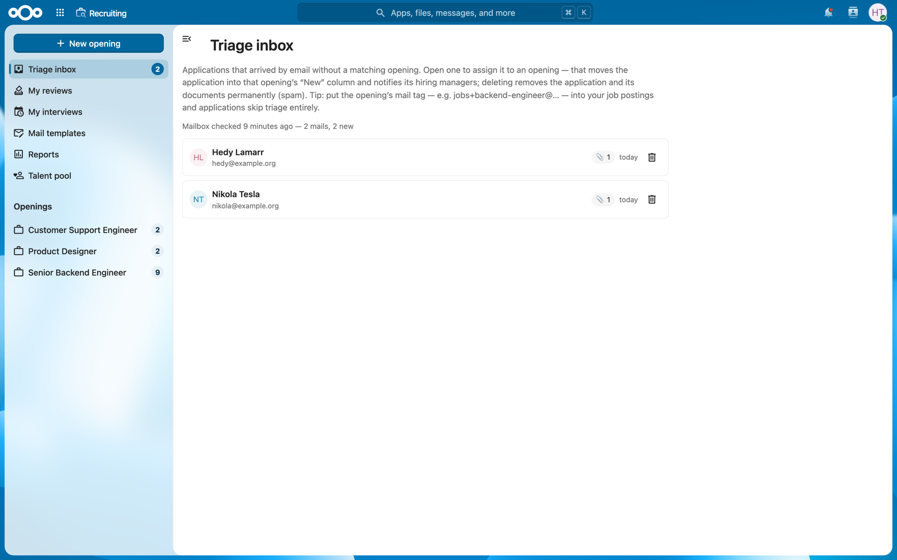
Unmatched applications wait here — assign them to an opening or delete spam.
Open a row and use Assign to an opening in the profile tab: the
application moves into that opening's "New" column and its hiring managers are notified.
Spam goes into the bin via the row's ⋮ menu — permanently, documents included.
The heartbeat line
shows when the mailbox was last checked. If a check fails, a warning appears here — so a
broken mailbox can never silently swallow applications.
Adding candidates by hand
Somebody applied at a job fair or on paper? on the opening's board opens a small form — name, contact details,
drag the CV in, done. The candidate starts in "New" like everyone else.
04The candidate file
Click any card and the candidate file opens on the right — five
tabs that hold everything about this person.
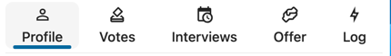
Profile
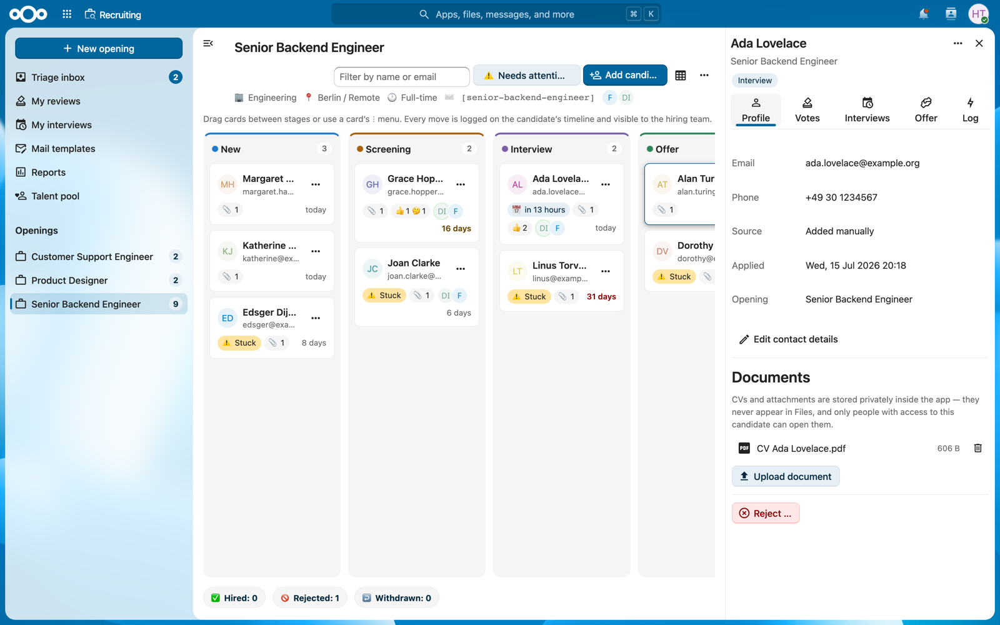
Contact details, source, application date — and the current stage at the top.Documents live at the bottom of the profile: CVs open right in the browser.
Contact details are editable by managers (Edit contact details).
If the same address applied before, a duplicate warning links to
the earlier application.
With Nextcloud Assistant installed, an AI summary of the
application can be generated — always labeled, never a decision.
Documents: upload more, preview PDFs in the browser, delete.
Stored privately in the app — never visible in Files.
At the very bottom sits the red Reject … button — deliberately
out of the way of everyday clicking (chapter 8).
The header menu (…)
Next to the candidate's name: Book interview, Move to …
any stage, and for recruiters the GDPR actions — Export data (a ZIP with
everything about this person, for data-access requests) and Delete
permanently.
Log — the complete story
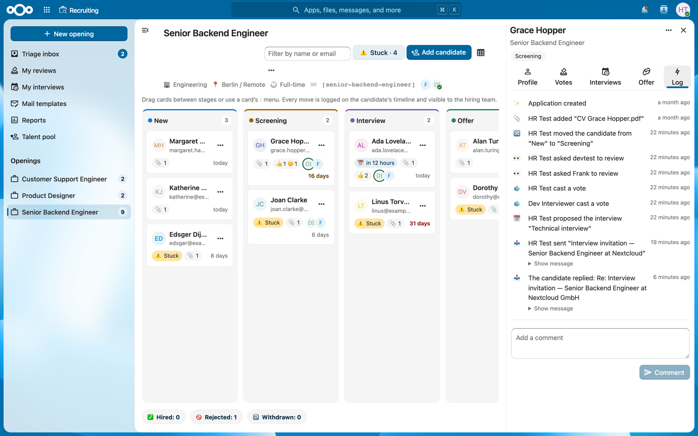
Every event in order — including the candidate's own reply ("The candidate
replied…") — merged with the team discussion.
The Log tab is the timeline (stage moves, votes cast, every mail with its full text,
interviews, offer steps) plus the team discussion. Write a comment and
@mention a colleague to notify them — the conversation stays with the
candidate instead of scattering across chats.
The Votes, Interviews and Offer tabs each have their own
chapter — read on.
05Screening & votes
The Votes tab is designed for one thing: honest, independent
opinions.
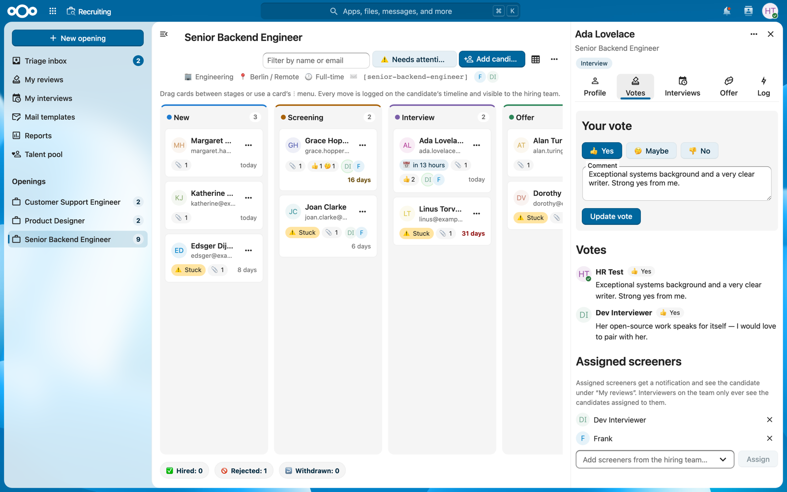
Your vote at the top, the votes of others below, assigned screeners at the bottom.
Casting your vote
Pick
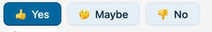
and add a
comment. A "No" always needs a written reason — "not a fit" is not a
reason. You can update your vote at any time.
Why can't I see the other votes? Because you
haven't voted yet. Votes of others stay hidden until you cast your own, so your opinion
is really yours. You can see who has voted (their names are listed) —
just not what they said. This is by design and cannot be bypassed, not even via the
timeline.
Assigning screeners
Managers add colleagues under Assigned screeners. Every assignee gets
a notification and finds the candidate in My reviews — their personal
to-do list, sorted by what still needs a vote:
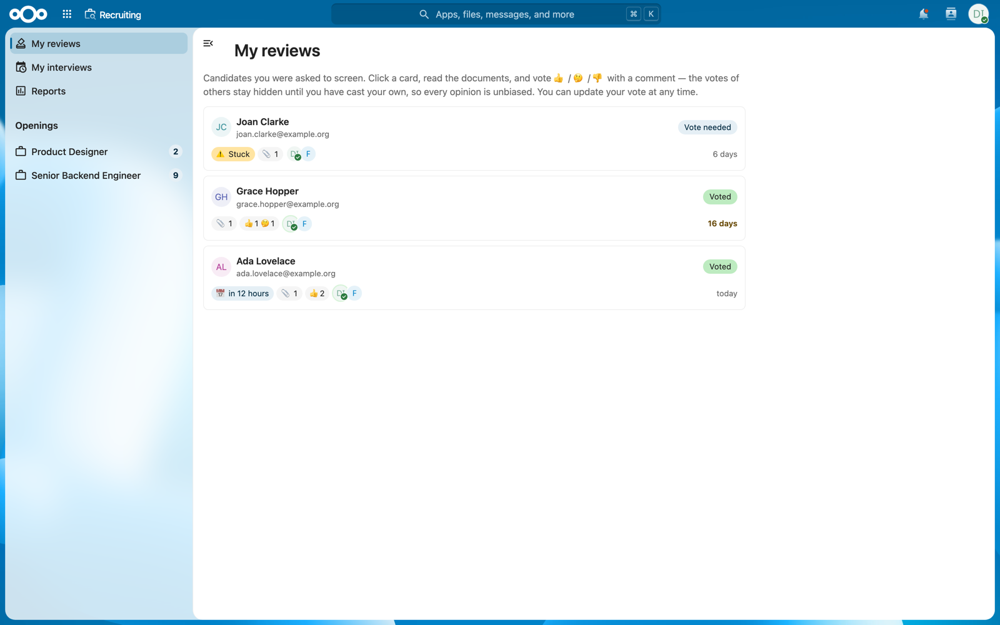
"My reviews": what you still owe an opinion on. The badge in the navigation
counts pending votes.
On the board you can follow the review round without opening a single card: the
screener avatars on each card get a green ring as their vote comes in.
With Assistant installed, an optional AI screening
hint compares the application against the opening's requirements — labeled
"verify yourself", because the humans decide.
06Interviews
No email ping-pong about times: the app reads the interviewers'
calendars, and the candidate picks a slot themselves.
Booking an interview
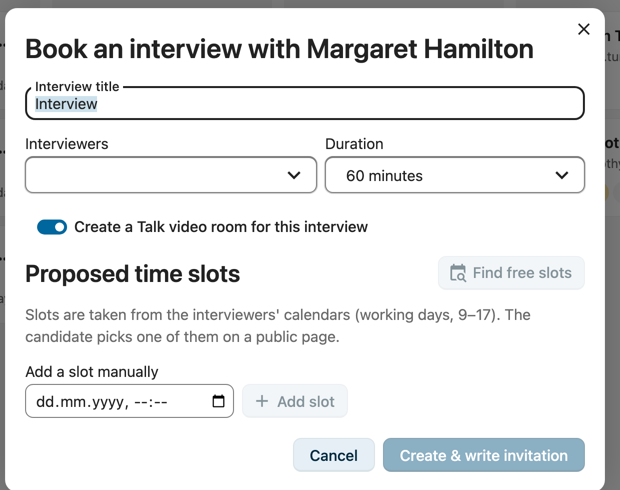
The booking dialog: interviewers, duration, Talk room — and proposed time slots.
Open the candidate → Interviews tab → Book interview.
Give it a title ("Technical interview"), pick the interviewers and a duration.
Decide whether a Talk video room should be created (if Talk is
installed). Switched off, you can note a meeting room — or paste a video link from
another tool.
Find free slots looks into the interviewers' calendars (working
days, 9–17) and proposes times. Untick any you dislike, add slots manually.
Create & write invitation shows the invitation mail —
prefilled from your template, with the personal scheduling link. Edit freely and
send. (If the link gets lost while editing, the app quietly re-attaches it.)
What the candidate sees
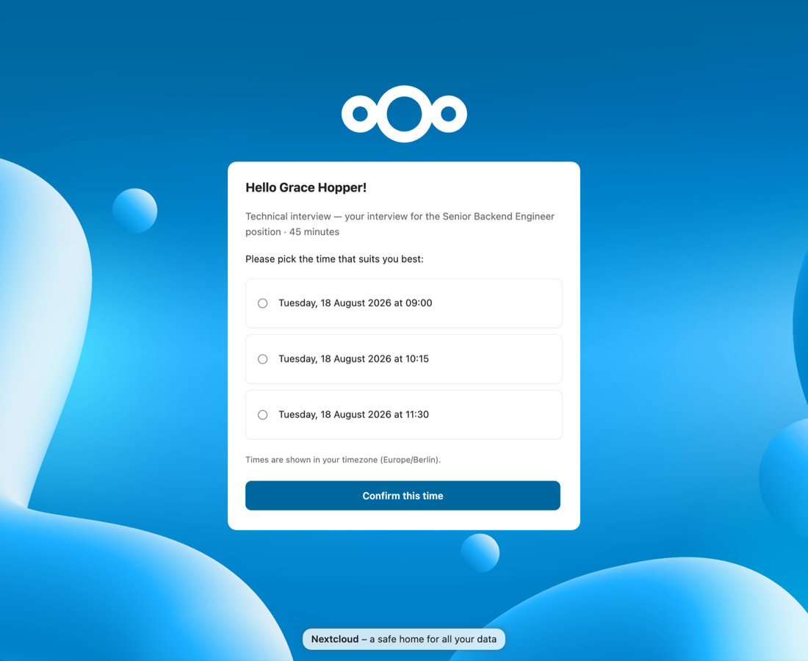
The scheduling page: no account, times in the candidate's timezone.
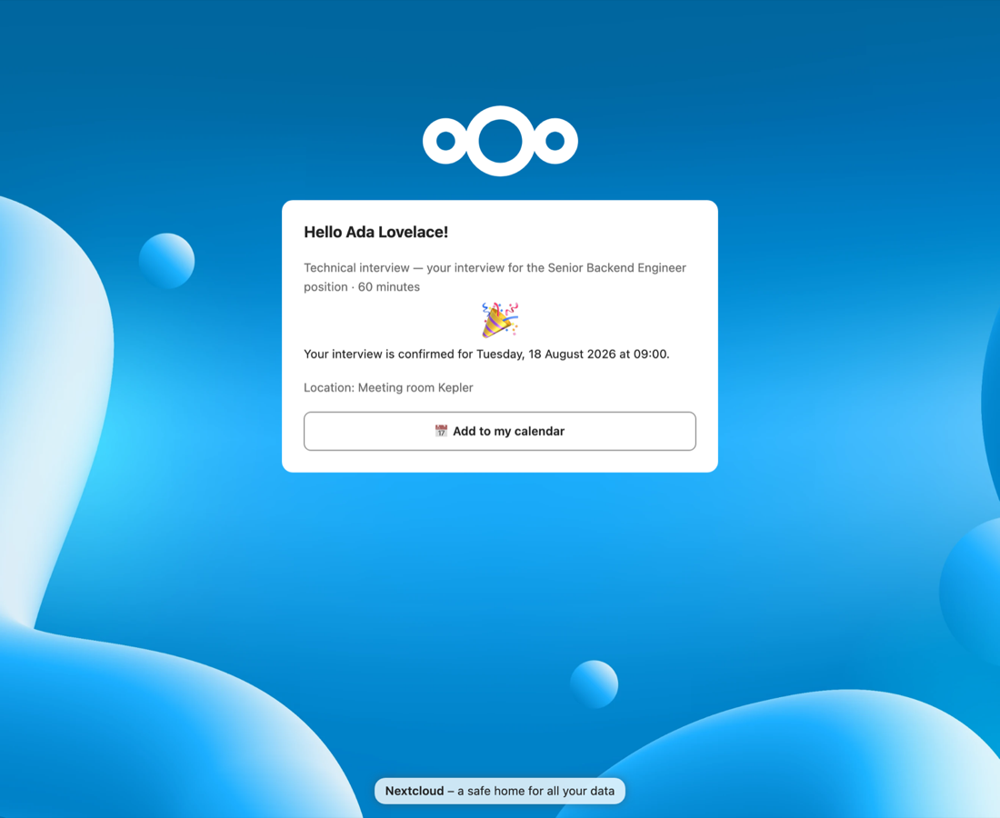
After confirming: 🎉, the meeting details, and
for their own calendar.
The moment the candidate confirms a slot, everything happens at once: the calendar
event lands in all interviewers' calendars, the Talk room is created (for video
interviews), the card moves to Interview, and the panel is notified.
Keeping track
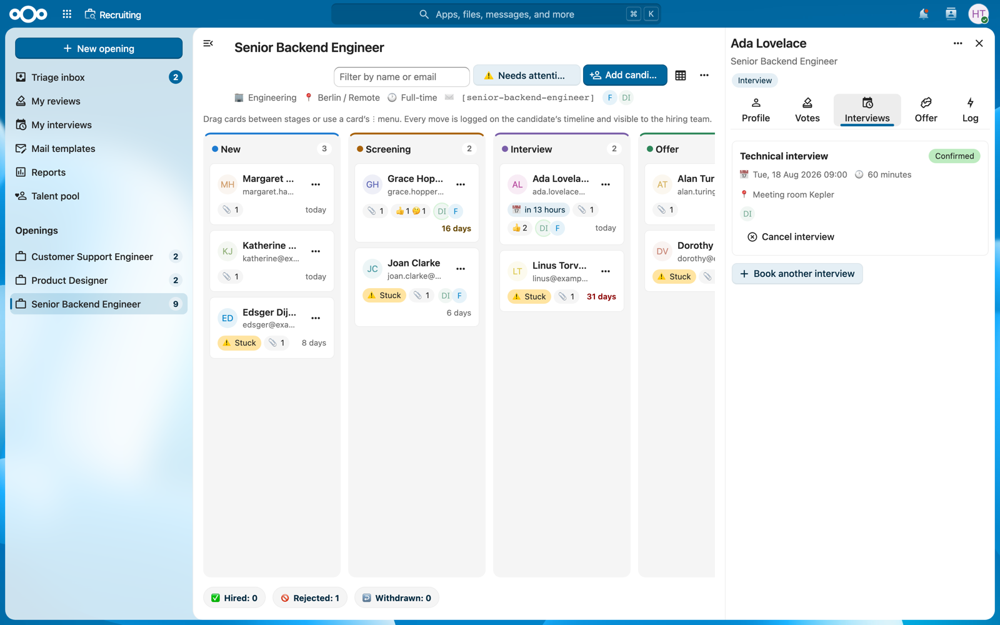
Every round with its status. "Awaiting candidate" = the link is out, no slot picked yet.
Copy scheduling link — if you want to resend it yourself, or the
candidate has no email address on file.
Cancel interview — notifies all interviewers and removes the
calendar event. The candidate page shows the cancellation.
My interviews in the navigation lists your own panel
appointments, including pending ones.
With Assistant installed, Suggest interview
questions drafts questions grounded in the opening's requirements — pick what
fits, ignore the rest.
07Offers
Salary data is sensitive — so offers live behind an extra wall,
and every offer needs a second pair of eyes before it can go out.
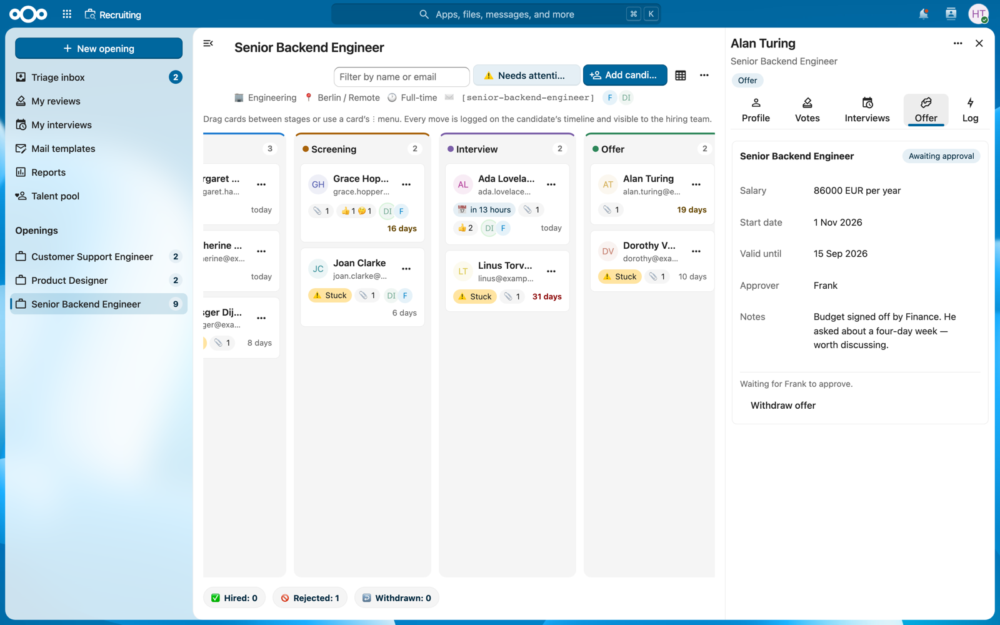
An offer awaiting approval. Only recruiters, this opening's managers and
the chosen approver can see this tab at all.
The life of an offer
Draft the terms: job title, salary (amount, currency, per
year/month/hour), start date, validity date, internal notes. Only drafts can be
edited.
Request approval from a colleague. You can never pick yourself —
four eyes are four eyes. The approver is notified, sees exactly this one candidate,
and either approves or sends the offer back to draft with a note.
Send the offer email — with the usual preview — or use
Mark as sent if the offer went out another way (phone, letter).
Both start the validity clock. The card moves to the green Offer column.
Record the answer: Accepted moves the candidate to
Hired 🎉 — remember to close the opening and tell the other
candidates. Declined keeps them in the pipeline so you decide what happens
next. Negotiating marks an ongoing conversation.
Offers expire automatically after their
validity date. The creator is warned three days ahead — and the board shows a ⚠️ Stuck
chip on the candidate. An expired offer is final; draft a new one if the conversation
continues.
Interviewers and observers never see offer terms — not in
this tab (it is hidden for them), not on the timeline, not in the activity stream. Mails
about offers show up for them only as "an email was sent".
08Rejecting & the talent pool
Rejections decide your reputation as an employer. The app makes
the respectful path the easy path.
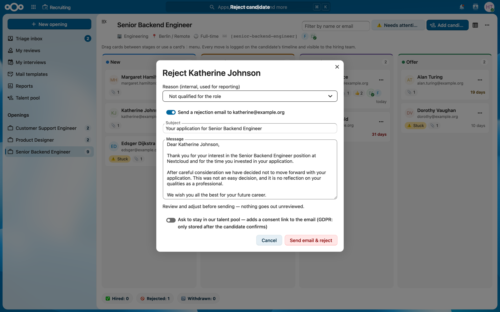
Reason, previewed mail, and the talent-pool invitation — all in one dialog.
The rejection flow
Click Reject … — the red button at the bottom of the profile
tab, or in the card's ⋮ menu on the board.
Pick an internal reason (not qualified, better candidate chosen,
position filled, withdrawn, other). Candidates never see it; your reports do.
Review the rejection mail, prefilled from your template. Edit
every word if you like — or reject without an email (for candidates without an
address, or when you called them personally).
Optionally tick "Ask to stay in our talent pool".
The talent pool — strictly on consent
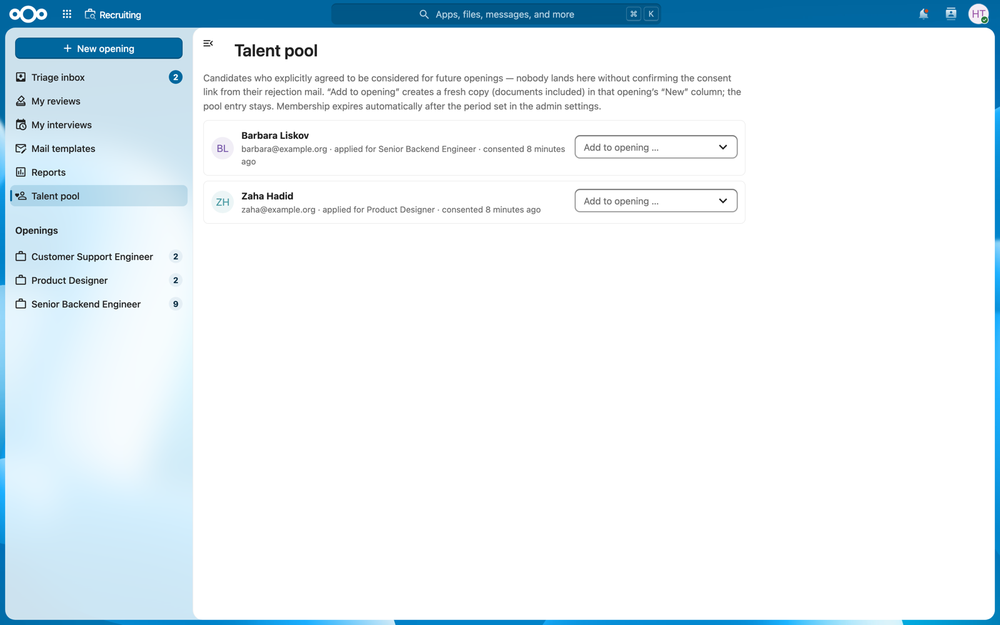
Only people who explicitly confirmed the consent link appear here.
The pool invitation adds a consent link to the rejection mail. Only when the candidate
clicks it and confirms do they appear in the pool — nobody is kept "just in case"
(that's not just polite, it's the GDPR). Pool membership expires automatically after the
configured period.
When a fitting position opens later, Add to opening creates a fresh
copy of the application — documents included — in that opening's "New" column. The pool
entry stays until it expires or the person asks to be removed.
09Staying on top of things
The app watches your pipeline so you don't have to.
The Stuck lens
Click in the board
header and only candidates where something is stuck remain. A candidate counts as stuck
when:
Situation
After
Waiting in New untouched
7 days
In Screening without a single vote
5 days
In Interview with no upcoming interview booked
3 days
In Offer without an active offer
3 days
A sent offer about to expire
3 days before expiry
Sitting in any stage
30 days
Each stuck card carries the ⚠️ chip — hover it to read exactly what's missing. And
independent of the chip, the time-in-stage on every card fades from gray to
amber (two weeks) to
red (a month).
Notifications
You get a Nextcloud notification (bell, top right) when: a new application arrives in
your opening · you are asked to review someone · you are added to an interview panel ·
a candidate confirms or a candidate replies · an offer waits for your approval · an
offer is about to expire · someone @mentions you.
The email digest
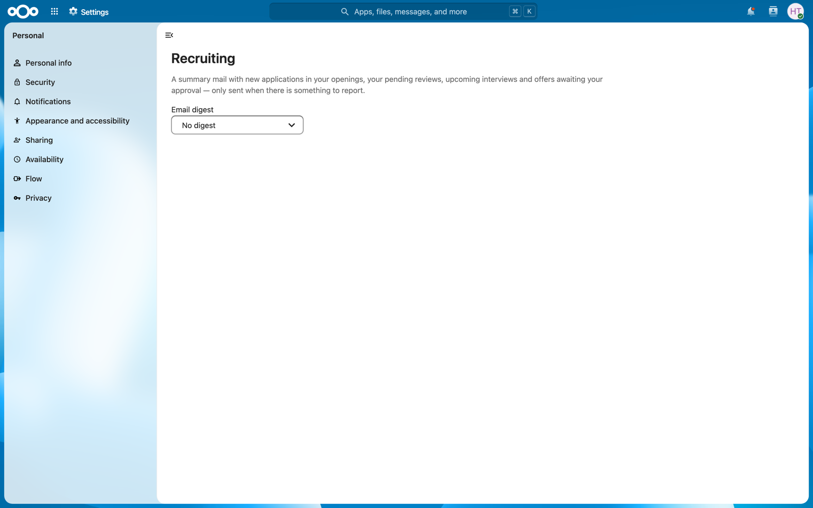
Personal settings → Groupware: a daily or weekly recruiting summary by mail.
Prefer email? Enable the digest — new applications in your openings, pending reviews,
upcoming interviews and offers awaiting your approval, in one mail. It is only sent when
there is actually something to report.
Recruiting results also show up in Nextcloud's universal search
(Ctrl+K /
⌘+K) — type a candidate's name from
anywhere in Nextcloud.
10Mail templates
Four mail types — confirmation of receipt, interview invitation,
rejection, offer — each with a built-in template you can replace with your own voice.
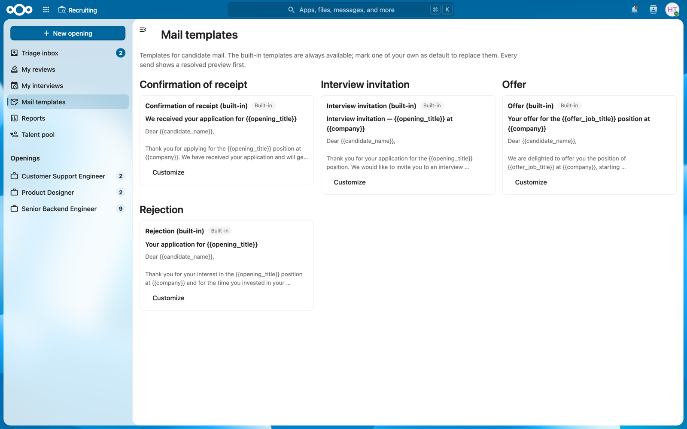
One column per mail type. Customize copies a built-in
template into an editable one; Make default activates it.
In the editor, placeholders like {{candidate_name}} or
{{interview_link}} appear as chips — click one to insert it at the cursor.
Each mail type only offers the placeholders it can actually fill, and templates are
validated when you save: a typo in a placeholder can never reach a candidate.
Templates are the starting point, not the final word:
every send shows the resolved text first, and you can edit it per candidate.
11Reports
Honest numbers, reconstructed from what actually happened — you
only see openings you have access to.
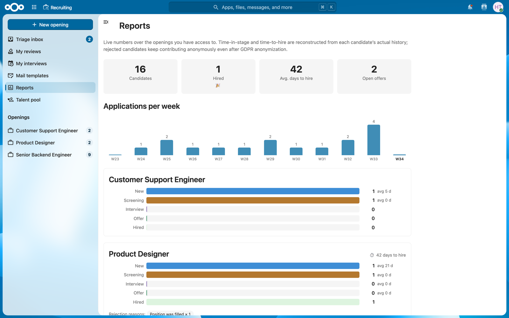
Headline numbers, applications per week, and per opening the funnel in stage colors.
Headline tiles: total candidates (with this week's trend), hired,
average days to hire, open offers.
Applications per week — the last twelve weeks, current week
highlighted.
Per opening: the funnel (how many candidates sit in each stage,
in the stage colors you know from the board), the average time spent in each stage,
days-to-hire, open offers, and the breakdown of rejection reasons.
Numbers survive anonymization: when a rejected candidate's
personal data is automatically erased after the retention period, their anonymous journey
still counts in the funnel and averages. Your statistics stay honest without keeping
personal data.
12Privacy & GDPR
Everything stays on your own server, and the compliance chores
run on autopilot.
Where candidate data lives
All data is stored in your Nextcloud — nothing is ever sent to a third party.
Documents live in protected app storage: they never appear in the Files app, and
only people with access to that candidate can open them.
Access follows the roles from chapter 1 — interviewers only see their assigned
candidates and never any salary data.
Automatic retention
Rejected and withdrawn candidates are anonymized automatically after
the retention period your admin configures (typically a few months). Name, contact data,
documents, mail texts, comments and summaries are erased; the anonymous stage history
stays for the reports. Expired talent-pool memberships are anonymized the same way.
When a candidate asks…
Request
What you do
"What data do you have about me?"
Candidate header menu → Export data (GDPR). You get a ZIP with
their profile, correspondence, interviews, offer terms and documents. Reviewer
names and internal team comments are not included — those are your
colleagues' personal data.
"Please delete my data."
Candidate header menu → Delete permanently (GDPR). Removes the
candidate with all documents, votes, comments, interviews and notifications.
Irreversible, with a confirmation dialog.
"Keep me in mind for later."
That's the talent pool — and it only happens after the candidate confirms the
consent link themselves (chapter 8).
For your admin
The administration settings (Administration → Recruiting) hold the technical setup:
the application mailbox (IMAP), the HR group, the sender identity, the retention period
and the talent-pool duration. Admins configure — they don't see candidates.
Questions this handbook doesn't answer? Ask your recruiting
team, or open the candidate's Log tab — chances are the answer is already in the
history. Happy hiring! 🎉